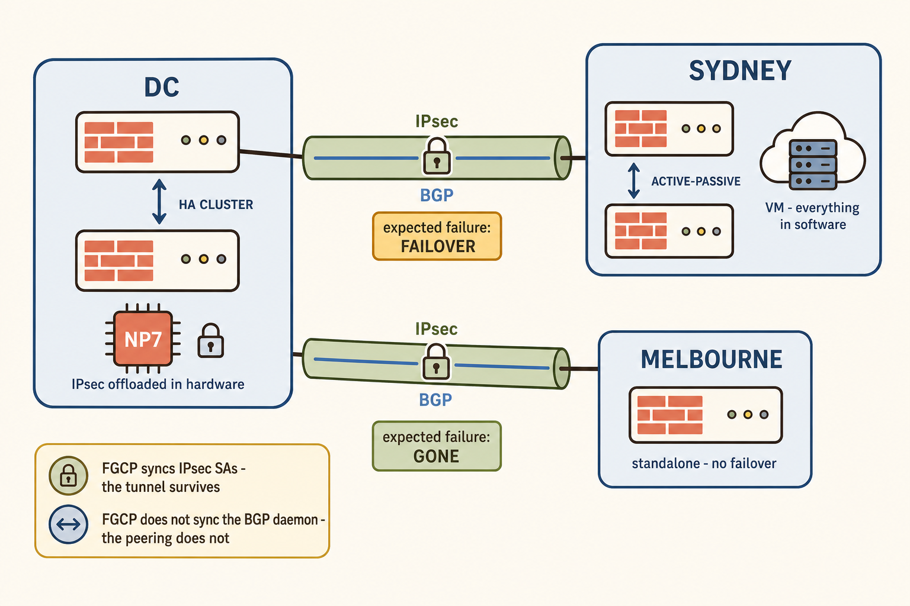

Three Sites, Two Tunnels, Two Very Different Peers

One hub, two spokes — and two completely different failure profiles.
The hub is a 2601F HA cluster with NP7 processors and IPsec offloaded into silicon. It builds two IPsec tunnels and runs a BGP peering inside each: one to Sydney, an Active-Passive cluster running as a virtual machine, and one to Melbourne, a single standalone FortiGate.
Everything interesting about this design follows from one asymmetry. The two spokes have identical connectivity and completely different failure profiles. Sydney can experience an event that looks like death but is not. Melbourne cannot.
Sydney Fails Over — The Shift Change
What actually happens, in order:
- Sydney's primary fails. FGCP promotes the secondary.
- The IPsec SAs are already synchronised, so the tunnel comes back almost immediately — often without the DC noticing at the tunnel layer at all.
- The BGP daemon does not survive. Its state machine, its RIB and its negotiated capabilities lived in the memory of a process on the dead unit. The new primary starts a fresh daemon that has never spoken to the DC.
- From the DC's perspective, the TCP session on port 179 dies.
- Without graceful restart: the DC withdraws every route learned from Sydney. Traffic to Sydney stops — not because forwarding is broken, but because routing announced a death that was really a change of shift.
- The peering rebuilds, routes are re-advertised, and service returns after a full BGP convergence that was never necessary.
config router bgp
set graceful-restart enable
config neighbor
edit <DC-peer-ip>
set capability-graceful-restart enable
next
end
endconfig router bgp
set graceful-restart enable
config neighbor
edit <Sydney-peer-ip>
set capability-graceful-restart enable
next
end
endThe Sydney Cluster Falls — Genuine Death
Both members gone. Power event, hypervisor failure, site loss. There is no secondary to promote and nothing is coming back inside a maintenance window.
Now every instinct reverses. Graceful restart, which was the hero of Scenario 1, becomes actively harmful — the DC holds stale routes and keeps forwarding into a site that no longer exists, for the duration of the restart timer. What you want here is exactly what you did not want a moment ago: withdraw the routes, and withdraw them fast.
Which means the real question is not "which tool for which scenario." It is:
The answer is a deliberately chosen tolerance window. You set your detection so that a routine Sydney failover falls inside it and a genuine site loss falls outside it. Graceful restart handles everything inside the window without disturbing the routing table. Anything still silent when the window closes is treated as real death and the routes go.
Tuning the Two Neighbours Differently
| Neighbour | Expected failure | Primary tool | BFD posture | Reasoning |
|---|---|---|---|---|
| DC ↔ Sydney (A-P VM) | Failover far more likely than site loss | Graceful restart, both ends | Relaxed or omitted — intervals above realistic failover time | A shift change must not be read as a funeral |
| DC ↔ Melbourne (standalone) | Device or tunnel loss. No failover exists | BFD | Standard defaults — if it is gone, it is gone | Graceful restart protects against an event that cannot occur here |
| DC ↔ Carrier edge | Silent far-end device death, no HA behind it | BFD | Aggressive — 250 ms × 3 | Interface state cannot see it and an alternative carrier exists |
Sydney: setting the window
If you use BFD on the Sydney peering at all, the intervals must sit comfortably above the cluster's realistic failover-and-reconverge time. Measure it — do not guess. Fail Sydney over deliberately during a maintenance window and time how long the BGP session is genuinely unavailable. Then set your detection well outside that figure. Anything tighter converts every planned patch into an unplanned reroute.
Melbourne: the simple case
No cluster means no failover means graceful restart protects against nothing. BFD is straightforwardly appropriate — subject to the usual test: is there an alternative path to Melbourne, or a second tunnel? If not, BFD there is a monitoring improvement rather than an availability one, and it should be described that way in the design document.
Other convergence levers worth applying here
- Keep the underlay stable. Flapping tunnels generate BGP updates that consume CPU on the very device least able to spare it.
- Filter the RIB. Inbound and outbound prefix filters reduce the table each spoke must process — the cheapest convergence improvement available and the one people skip.
- Do not tune BGP timers as a substitute. On a VM spoke this is the worst option: it multiplies software work on the constrained peer and buys false positives.
- Verify, do not assume.
get router info bfd neighborandget router info bgp neighbors <ip>confirm that BFD is Up and that graceful restart was actually negotiated rather than merely configured.
What to Actually Do
| # | Action | Why |
|---|---|---|
| 1 | Enable graceful restart on both ends of DC ↔ Sydney | Both the global command and the per-neighbour capability, or nothing is negotiated |
| 2 | Verify negotiation with get router info bgp neighbors | Configured and negotiated are different facts |
| 3 | Time a real Sydney failover in a maintenance window | You cannot set a tolerance window against a guess |
| 4 | If using BFD on Sydney, set intervals above that measurement | Keep routine failovers inside the window |
| 5 | Enable BFD on DC ↔ Melbourne at defaults | No failover exists; a drop means gone |
| 6 | Confirm BFD sessions are Up, not merely present in config | The quiet-failure mode that closes risks which are still open |
| 7 | Apply inbound/outbound prefix filters to both spokes | Smaller RIB, faster processing, less CPU on the VM |
| 8 | Document which neighbour uses which tool and why | The next engineer will otherwise "standardise" the config and undo it |